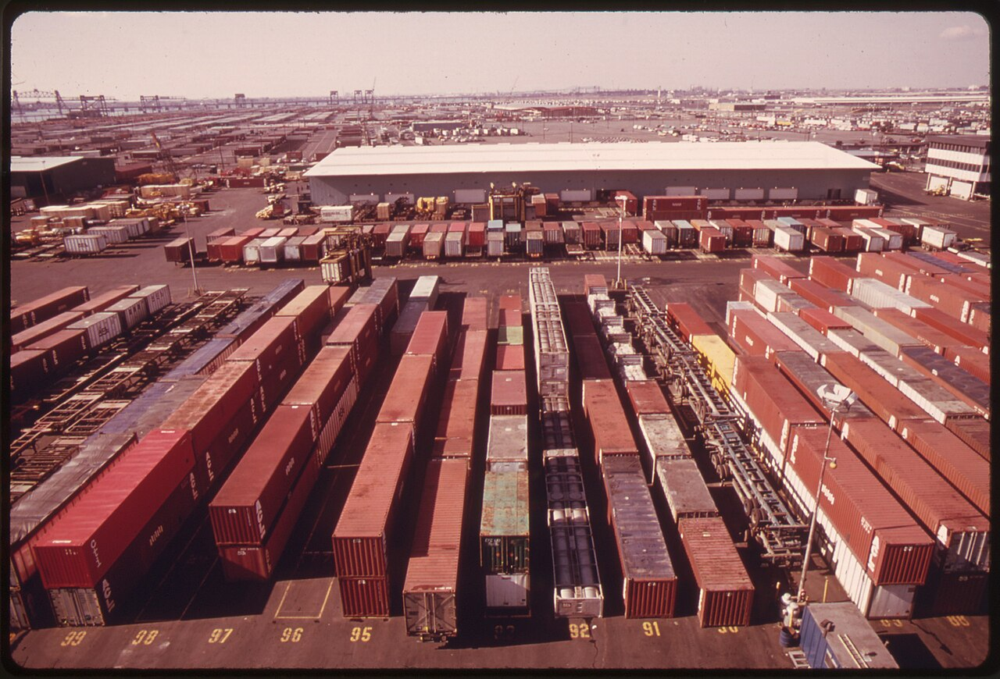
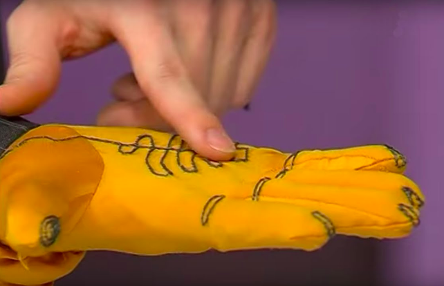

The Environmental Cost of Computing
A mathematical model of HPC energy demand, 2030 carbon emissions, and the transition toward cleaner computing.
Read more
My academic work uses modeling, writing, and evidence to make open-ended problems easier to reason about. These papers show how I frame assumptions, compare tradeoffs, and communicate conclusions.
HERE
A mathematical model of HPC energy demand, 2030 carbon emissions, and the transition toward cleaner computing.
Read more
A second-author research artifact showing teamwork, modeling structure, and presentation of quantitative reasoning.
Read more
A clean paper copy focused on model clarity, problem decomposition, and evidence-based communication.
Read more
A final project document connecting technical exploration with human-centered design and practical communication.
Read more